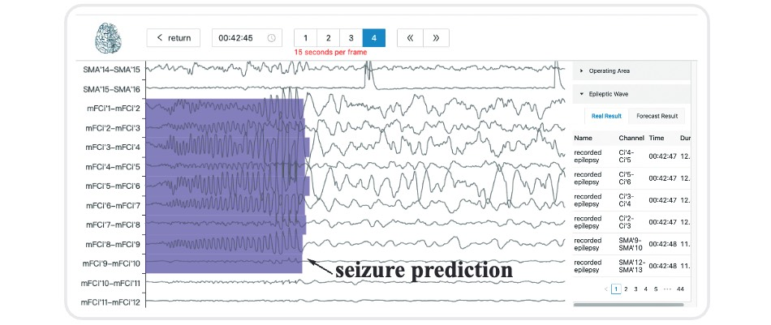

About
Milestone
Sept. 2023
Research
1 paper accepted by NeurIPS 2023 (first author)
1 paper accepted by NeurIPS 2023 (co-first author)
Jul. 2023
Awards
Outstanding Undergraduate Graduate of Zhejiang Province
Outstanding Undergraduate Graduate of ZJU
Sept. 2023
Research
As the leader of the SRTP National Innovation Project, our work was rated as “Excellent” (the highest level)
Jul. 2021
Awards
Zhejiang Provincial Government Scholarship
First-class Scholarship at ZJU
Outstanding Student Scholarship of CTZ Edu Fdn
Sept. 2020
Admission
Admitted to the Computer Science major at ZJU
Nov. 2020
Award
First Prize in the Zhejiang Province College Physics Competition
Sept. 2019
Admission
Admitted to the Qiushi Science Class (Physics) at
Chu Kochen Honors College, ZJU
Selected Honors & Awards
- Outstanding Undergraduate Graduate of Zhejiang Province, 2023 (Top 5%)
- Outstanding Undergraduate Graduate of Zhejiang University, 2023
- Xiaomi Scholarship, 2022 (3/800+)
- Zhejiang Provincial Government Scholarship, 2021 (28/800+)
- First-class Scholarship at Zhejiang University, 2021 (Top 3%)
- Outstanding Student Scholarship of CTZ Education Foundation, 2021 (3/800+)
- Outstanding Student of Zhejiang University, 2021
- First Prize in the Zhejiang Province College Physics Competition, 2020 (Top 5%)
- Outstanding Youth League Member of Zhejiang University, 2020
Publications
Brant: Foundation Model for Intracranial Neural Signal
TLDR: We propose a foundation model for modeling intracranial recordings, providing a large-scale, off-the-shelf model for medicine.
NeurIPS 2023

PPi: Pretraining Brain Signal Model for Patient-independent Seizure Detection
TLDR: We propose a pretraining-based model to conduct patient-independent seizure detection on SEEG in the clinical scenario.
NeurIPS 2023
Teaching
Teaching Assistant- CS 21121340: Computer Networks, with Prof. Xiqun Lu (2023)
- CS 21121340: Computer Networks, with Prof. Xiqun Lu (2022)
- CS 211C0010: Object-oriented Programming, with Prof. Weiwei Xu (2021)
- CS 211G0280: Fundamentals of C Programming (2020)


Top